Paths
Photographie2011 – 2013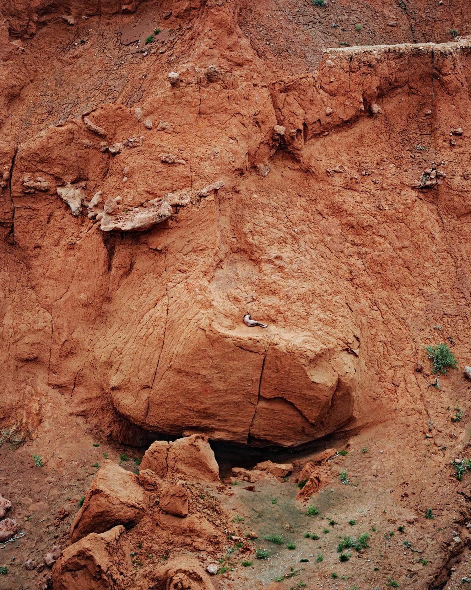
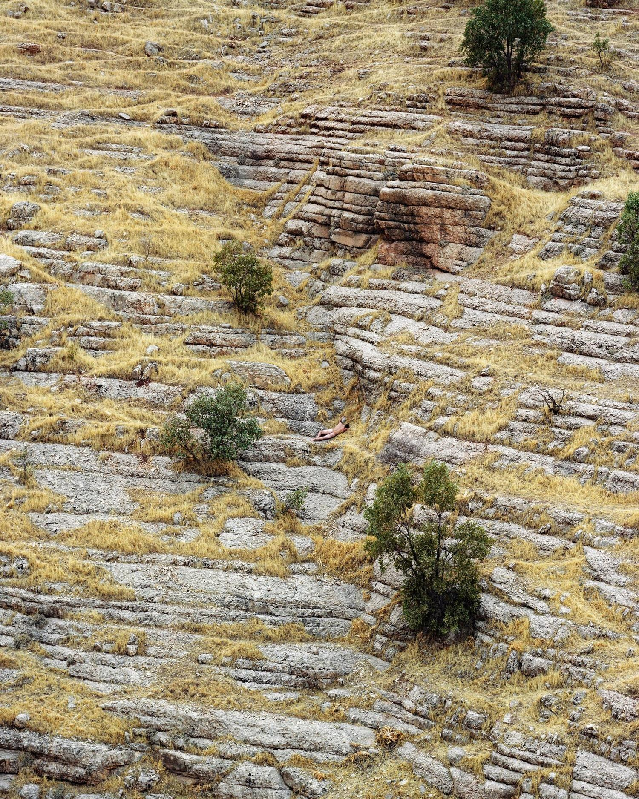
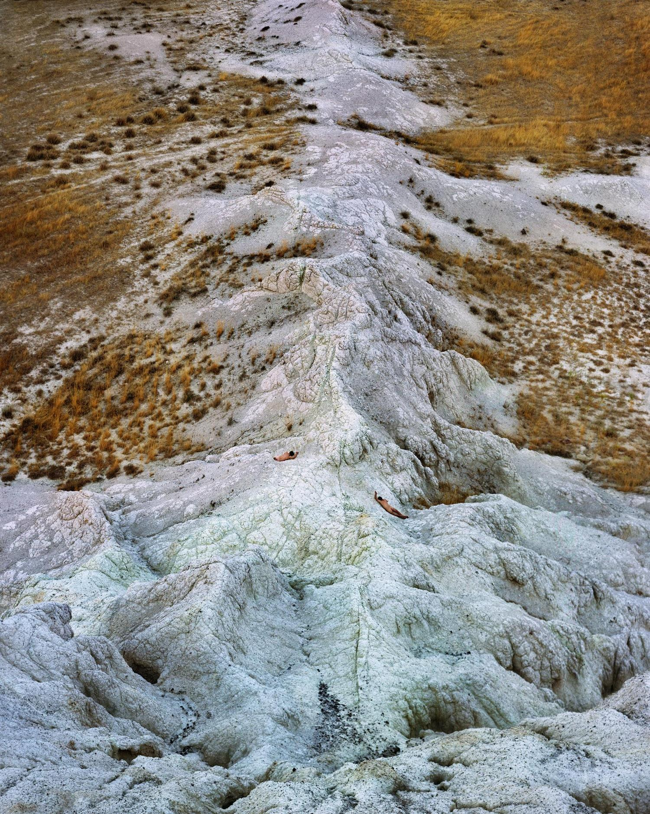
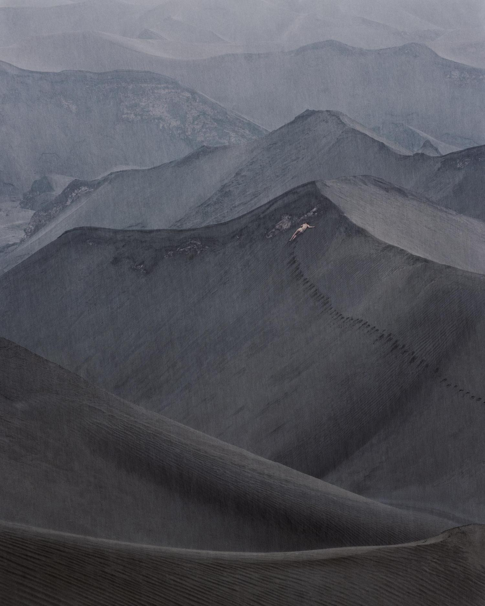
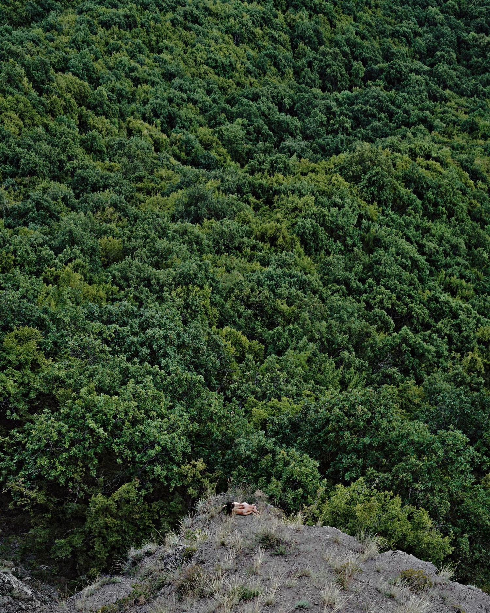
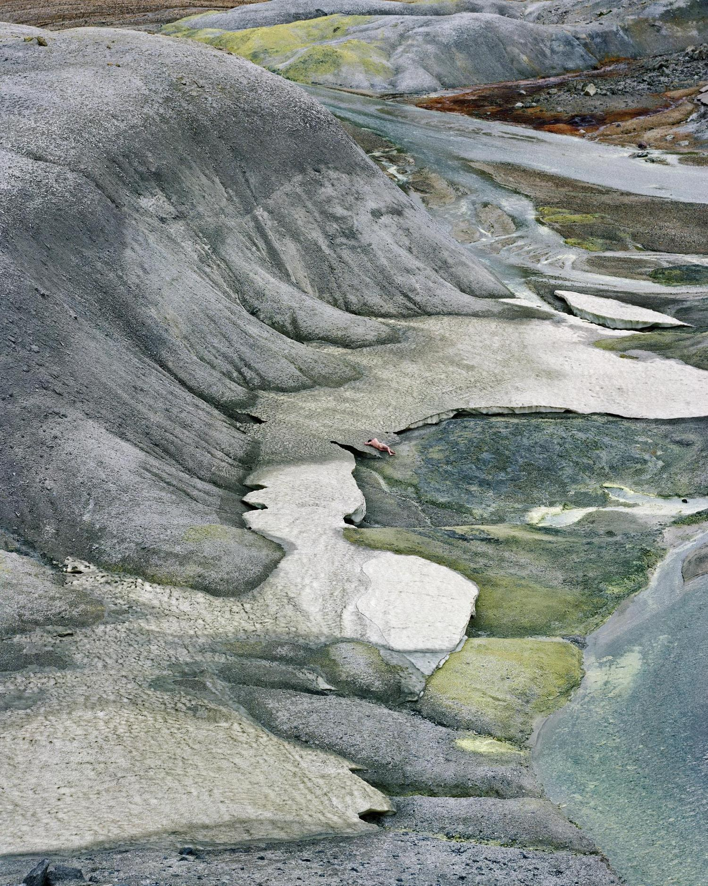
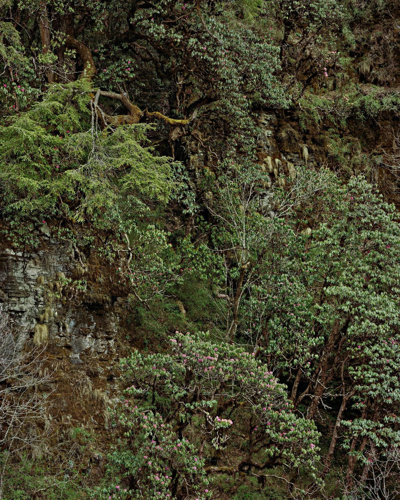
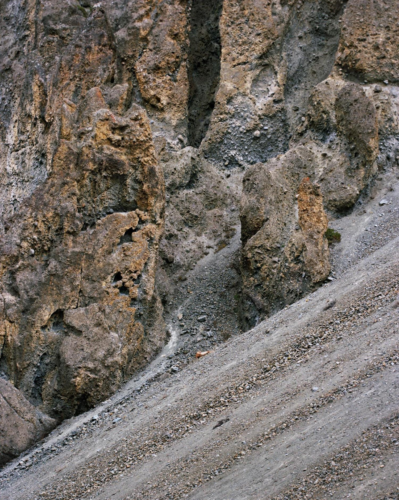
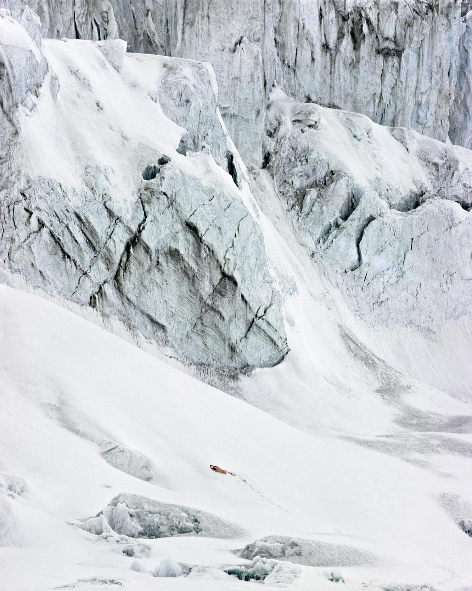
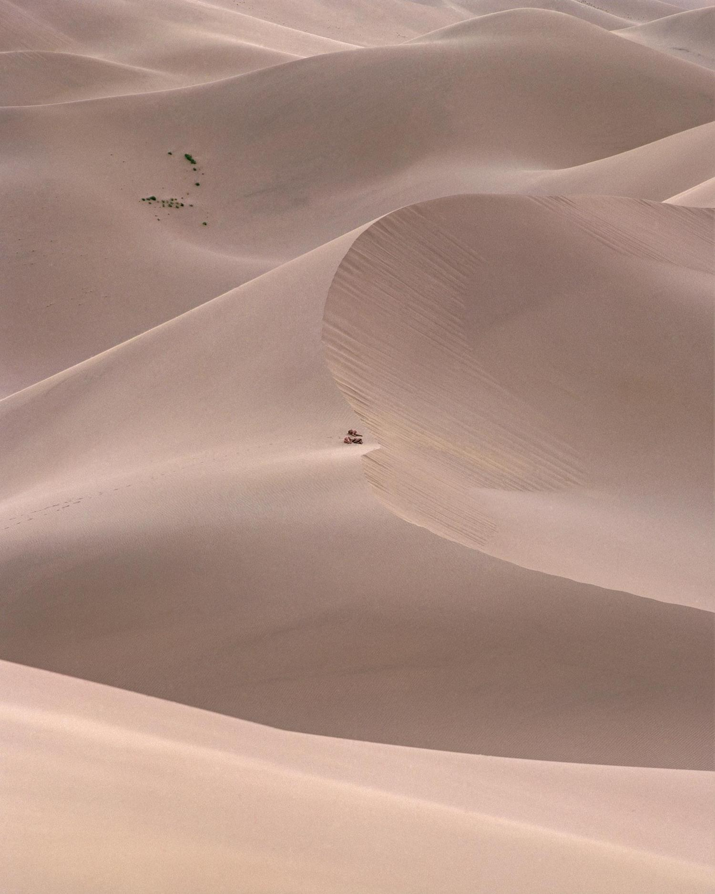
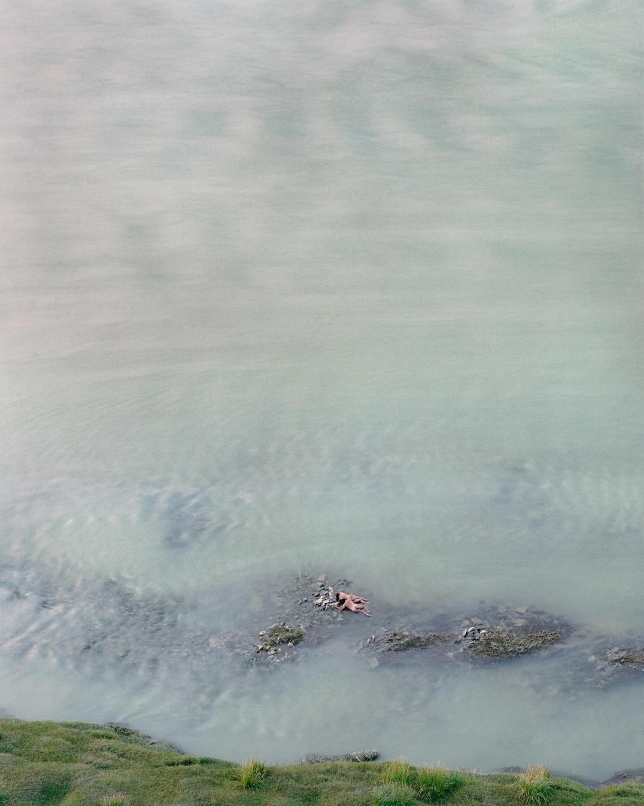
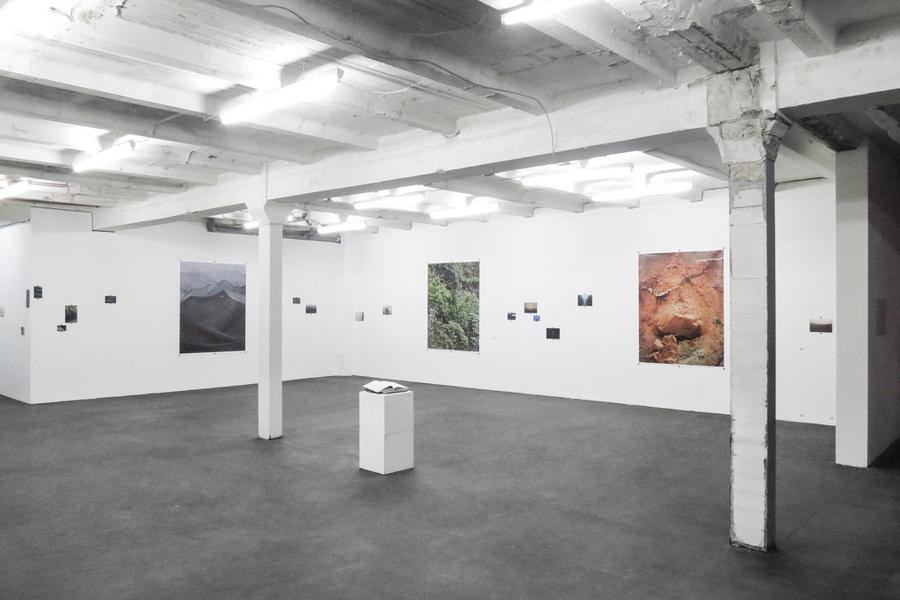
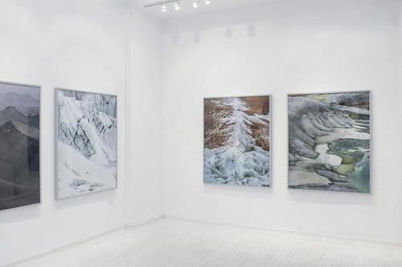
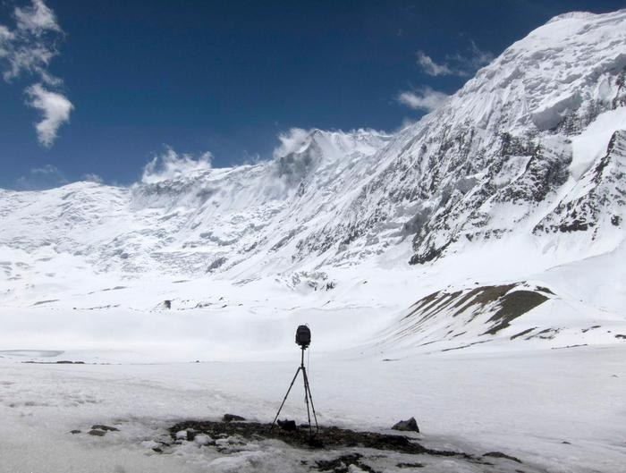
Paths
2011 - 2013
A series of twelves photographic works, inkjet on ultrasmooth paper
120x150cm - 1/5+AP and certain photographs 60x80cm - 1/7+AP
Strangers that would be encountered along the way and willing to give themselves away to nature, resulting in a peregrination from more than a year, from Europe to Asia by land only, through Iraq, Iran, onto Afghanistan, Tibet until Indonesia, Japan and Mongolia.
Ruben searched for more far away lands, the unknown, in Paths, walking, riding, until there would a place, a person, if all circumstances only would come together, then there would be a picture, if one thing would come to be missing, the way would just continue, until finally all came together.
Performing sometimes in welcoming sand, sometimes in the harsh snow, the just encountered fellows would let themselves go, opening their senses. Embracing everything that surrounds them. Ephemera intensity before saying, often, goodbye to each other forever.
Placing the bodies of people there in part with these accidental and dramatic landscapes, like the trees, the rocks or the black sands of Gunung Bromo.
A narrative constructed only by the randomness of the encounter, places and body, meeting with utopia and hope in these only suspended moments. Bodies of people that became friends, performing, not without difficulties, leaving wounds, marks, and souvenirs from a time before heading towards different paths, after sharing one for a while.